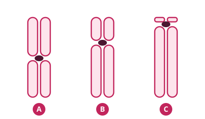

Los ácidos nucleicos almacenan y transmiten la información genética y dirigen la síntesis de proteínas. Recuerda: ARN con ribosa y uracilo; ADN con desoxirribosa y timina; púricas A, G, pirimidínicas T, U, C.
En teoría, todas nuestras células tienen el mismo ADN nuclear y todas las mitocondrias el mismo ADNmt. Pero existe el mosaicismo: mutaciones que aparecen en unas células (o mitocondrias) y no en otras.
Origen de las mitocondrias: teoría de la endosimbiosis (Lynn Margulis): eran bacterias que acabaron viviendo dentro de otra célula. Por eso su ADN se parece al bacteriano.
ADN mitocondrial
Es circular y se hereda solo de la madre: las mitocondrias del espermatozoide están en la cola, que queda fuera del óvulo.
Homoplasmia: todas las mitocondrias tienen el mismo ADNmt. Heteroplasmia: coexisten mitocondrias con mutación y sin ella (un tipo de mosaicismo).
Tiene una tasa de mutación 10 veces mayor que el ADN nuclear. Sus regiones hipervariables son propias de cada familia y se usan en estudios forenses.
Las enfermedades mitocondriales son de difícil diagnóstico y alteran el metabolismo energético.
2. Los cromosomas Muy importante
El ADN se empaqueta con las histonas en cromatina, que se superenrolla hasta formar los cromosomas.
46 cromosomas (23 pares): autosomas (1 a 22) y sexuales (X e Y). Gametos: haploides (23); resto de células: diploides.
Partes: centrómero, brazo corto (p), brazo largo (q), cromátidas y telómeros (protegen el ADN; se acortan en cada división y la telomerasa los regenera en parte).
Bandas G: tinción que da un patrón de bandas claras y oscuras propio de cada cromosoma, como una huella dactilar. Se ve en metafase. Los cromosomas se numeran por tamaño (el 1 es el más grande).
Gen: unidad básica de la herencia. Locus (plural loci): lugar que ocupa en el cromosoma. Se indica cromosoma + brazo + posición: la fibrosis quística está en 7q31.3.

A = metacéntrico · B = submetacéntrico · C = acrocéntrico.
Tipo
Centrómero
Metacéntrico
En el centro: brazos iguales
Submetacéntrico
Ligeramente desplazado
Acrocéntrico
Casi en el extremo: apenas brazo p. Pares 13, 14, 15, 21 y 22
Mitosis y meiosis
Mitosis
Meiosis
Células
Somáticas
Solo las células madre de los gametos (diploides)
Divisiones
1
2
Anafase
Se separan cromátidas hermanas
1.ª: cromosomas homólogos · 2.ª: cromátidas
Sobrecruzamiento
No
Sí, entre homólogos
Resultado
2 células idénticas
4 células haploides distintas
Finalidad
Crecimiento y renovación de tejidos
Continuidad de la especie y variabilidad genética
3. Expresión génica Importante
Dogma central (Crick, 1970): ADN → ARN → proteína. El gen se lee de 5' (región promotora) a 3'.
Exones: zonas codificantes. Intrones: no codifican; indican por dónde hay que cortar. En el splicing se eliminan los intrones; si falla, la proteína sale incorrecta.
El ARNm sale del núcleo protegido en sus dos extremos (caperuza y cola) para que no lo degraden las enzimas.
Cada codón (3 nucleótidos) codifica un aminoácido; empieza en AUG (Met) y termina en UAA, UAG, UGA. Cuanto más larga es una proteína, más probable es que tenga alguna alteración.
Los microARN no codifican proteínas: regulan la expresión de los genes.
Ampliación — Proyecto Genoma Humano
Esfuerzo internacional para secuenciar el genoma humano (octubre 1990 - abril 2003). Demostró que el 99,9 % del ADN es igual en todas las personas: solo nos diferenciamos en un 0,1 %. La referencia actual (T2T-CHM13+Y, 2023) ha secuenciado los 23 cromosomas de extremo a extremo (≈ 3.050 millones de pares de bases).
4. Variación genética Muy importante
Todo lo que se aparta de la secuencia de referencia es una variante.
Criterio
Tipos
Frecuencia
Polimorfismo: > 1 % de la población (los más frecuentes, SNP) · Mutación: < 1 %. «Mutación» solo indica frecuencia: no implica que sea perjudicial
Efecto
Neutro, beneficioso o perjudicial (y una misma variante puede ser una cosa u otra según el ambiente: un conejo blanco destaca en la sabana, pero se camufla en la nieve)
Origen
Endógeno (errores de polimerasas o de reparación, metabolitos reactivos) · exógeno (agentes químicos, biológicos o físicos, como los rayos UV)
Células afectadas
Germinales: afectan a los gametos y se heredan · Somáticas: afectan a células del cuerpo, no se heredan
Mutaciones a pequeña escala (puntuales)
Mutación
Qué pasa
Ejemplo / efecto
De cambio de sentido (missense)
Cambia un aminoácido por otro. La más frecuente (50 %)
GAA (Glu) → GAC (Asp). La proteína puede no funcionar o hacerlo mal
Sin sentido (nonsense)
Aparece un codón STOP (10 %)
Proteína cortada; si ocurre al principio, casi no se forma
Silenciosa
Cambia el codón pero codifica el mismo aminoácido
GAA y GAG → ambos Glu. Sin efecto
Cambio de marco de lectura
Deleción o inserción de un nº de nucleótidos no múltiplo de 3
Cambian todos los aminoácidos siguientes
★ Clave de examen
Si se pierden 3 nucleótidos (un codón entero), no cambia el marco: se pierde un solo aminoácido y el resto se lee bien. Ejemplo: TCG → TAG es una mutación sin sentido (TAG = STOP).
5. Mutaciones a gran escala (cromosómicas) Muy importante
Pueden estar en todas las células o en mosaico. Pueden ser genómicas (número) o cromosómicas estructurales (equilibradas o no). Un número distinto de 46 se llama heteroploide.
Numéricas
Euploidía: múltiplo exacto de 23. Haploide (n, normal en gametos), diploide (2n), triploidía (3n = 69) y tetraploidía (4n): estas dos son incompatibles con la vida (aborto espontáneo).
Aneuploidía: cualquier otro número: sobra o falta un cromosoma. Ocurre en el 5 % de las gestaciones. Monosomía (1 copia) y trisomía (3 copias); muchas acaban en aborto espontáneo.
Cariotipo
Síndrome
47, +21
Síndrome de Down (trisomía 21)
47, +18
Síndrome de Edwards (trisomía 18)
47, +13
Síndrome de Patau (trisomía 13)
45, X
Síndrome de Turner (monosomía X)
47, XXY
Síndrome de Klinefelter
47, XXX · 47, XYY
Síndrome triple X · síndrome XYY
Truco para recordar
Edad de votar, edad de Edwards: 18. Patau = 13 (el «número de la mala suerte»). Down = 21, el más frecuente.
Estructurales
Tipo
Qué ocurre
Translocación recíproca
Intercambio entre cromosomas no homólogos (puede ser entre cualquiera). Equilibrada si el intercambio es equivalente (puede no dar síntomas); no equilibrada si no (síntomas o aborto). Los cromosomas resultantes se llaman derivados
Translocación robertsoniana
Dos acrocéntricos (13, 14, 15, 21, 22) pierden sus brazos cortos (no esenciales) y se fusionan. Cariotipo de 45 cromosomas; el portador está sano, pero su descendencia puede no estarlo
Deleción
Rotura y pérdida de material (desequilibrada). Terminal (una rotura) o intersticial (dos roturas). Ej.: síndrome del maullido (deleción de 5p: llanto como de gato, retraso mental); microdeleciones: Prader-Willi, Angelman
Duplicación
Material repetido (desequilibrada). A menudo con anomalías fenotípicas
En la clínica — portador de una translocación robertsoniana 14;21
Tiene un 14 normal, un 21 normal y el cromosoma fusionado 14/21. Con una pareja sin translocación, sus hijos pueden ser: normales, portadores equilibrados (como él), con trisomía 21 (síndrome de Down), con trisomía 14 o con monosomías del 14 o del 21 (que no son viables).
6. Epigenética Importante
Cambios reversibles que activan o desactivan genes sin cambiar la secuencia de ADN (si se habla de todo el genoma: epigenómica).
Metilación del ADN: se añade un CH₃ a la citosina (posición 5) → las proteínas no pueden «leer» el gen y no se expresa. La desmetilación lo revierte.
Modificación de las histonas: cambia lo compacto que está el ADN. La unión de un grupo acetilo afloja el enrollamiento y el gen se lee mejor.
7. Aplicaciones de la genética médica y farmacogenética Importante
La investigación genética busca: descubrir genes asociados a enfermedades, marcadores de respuesta y de toxicidad a fármacos, y terapia génica.
Secuenciación masiva: lee el ADN a gran escala, muchos genes o el genoma completo a la vez. Ejemplo: en familias con angiosarcoma cardiaco permitió encontrar la mutación común a todos los afectados en el gen POT1.
Farmacogenética: estudia cómo las diferencias genéticas cambian la respuesta a los fármacos. El fenotipo metabolizador (lento, normal, rápido, ultrarrápido) marca la velocidad a la que el hígado procesa el fármaco.
Si el medicamento es…
El metabolismo lo…
Un metabolizador rápido…
Fármaco activo
Inactiva para eliminarlo
Lo elimina antes: puede no hacer efecto
Profármaco
Activa
Forma demasiado fármaco activo: riesgo de toxicidad
En la clínica
La codeína es un profármaco: el CYP2D6 del hígado la convierte en morfina. Una madre lactante metabolizadora ultrarrápida forma mucha morfina, que pasa a la leche y puede intoxicar (incluso matar) al bebé. Por eso puede ser útil conocer el genotipo del CYP2D6 antes de dar codeína.